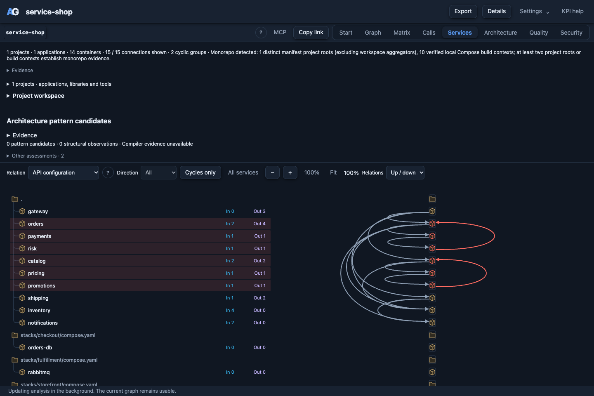

Service Shop
An included demo for service dependencies and cycles.
Service Shop is a deliberately coupled example in the ArchGuard repository. Its three Compose stacks describe ten local APIs and four infrastructure services. Analysis reads those declarations; you do not need to start containers.
1. Open the demo
After installing ArchGuard, run this from the repository root:
archguard serve examples/service-shop --port 8789Open http://127.0.0.1:8789/ and select Services. Choose API configuration to inspect the configured HTTP connections.

2. Follow a cycle
Select Cycles only. The demo contains two configured HTTP cycle groups:
- catalog → pricing → promotions → catalog: pricing asks for discount rules; promotions reads product categories back from catalog.
- orders → payments → risk → orders: payment authorization asks for a risk check; risk reads customer order history.
These are structural cycles between services. They do not establish infinite recursion in a request: the return calls use separate endpoints.
3. Inspect one service
Select orders. Incoming relationships lead from gateway and risk. Outgoing relationships lead to payments, inventory, shipping and notifications. Select a connection to inspect its Compose declaration and environment key.
4. Compare the evidence
Switch to Startup (depends_on). These seven startup dependencies describe infrastructure ordering, not observed API traffic. The two configured HTTP cycles do not become startup cycles.
archguard services examples/service-shop --format json
archguard services examples/service-shop --fail-on-foundThe second command returns a nonzero result for the demo's configured HTTP cycles. This is an expected finding, not an installation failure.
Scope
This is an intentionally coupled demo, not a production shop. API data is in memory, payments are mock authorizations, and the database, cache and broker entries describe deployment intent. Source imports and service relationships are separate analyses.